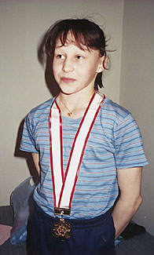

Irina Viatinina (USSR)
1989 Leningrad Intl. AA Champion

Irina was born on March 5, 1973. She trained at Dinamo Leningrad.
Competition Results
1986
Jr. Friendship Tournament (Druzhba): 1st Team, 13th AA
Jr. GDR-USSR Dual Meet: 4th AA
1988
All-Union Summer Games for Youth: 2nd AA
Jr. European Championships: 5th AA, 3rd V, 3rd B
Jr. Friendship Tournament (Druzhba): 1st Team, 17th AA, 3rd V, 3rd UB
Jr. ROM-USSR-GDR Meet: 1st AA, 1st FX, 3rd V, 3rd UB
1989
Jr. European Team Championships: 1st AA
Leningrad International: 1st AA, 1st V, 2nd UB, 2nd FX, 4th B
USSR Championships: 2nd V, 4th UB
USSR Cup: 1st Team, 6th AA
World Sports Fair: 7th AA, 2nd UB, 3rd FX
1990
Massilia Cup: 4th AA
This page was created on December
30, 2006 and was last updated on September 06, 2022.
© Gymn Forum